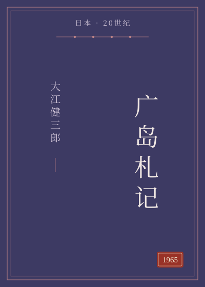
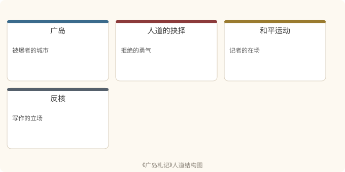

广岛札记
一、基本信息
| 作者 | 大江健三郎 |
|---|---|
| 成书/出版 | 1965年（作者页 B167 口径：广岛札记（Hiroshima Notes）） Kenzaburo Oe — Encyclopaedia Britannica（百科全书） |
| 国别/地区 | 日本 |
| 时代 | 现当代 · 20世纪 |
| 体裁 | 随笔集 |
| 语言 | 日语 |

《广岛札记》人道结构图（主题·结构图）
二、创作背景
作者页（B167）：大江 major_works 载'广岛札记（Hiroshima Notes）'（B167 作者页定位，详见 gerende 条核对）。
题材（通说）：原子弹爆炸幸存者的系列报道与反思——'人道主义'的抉择。
三、内容脉络
广岛之行：被爆者医院、和平运动、'人道的拒绝'（章节通说待核）。
四、主要人物表
| 人物 | 身份 | 说明 |
|---|---|---|
| 重松信弘 | 被爆者 | （人物待核） |
五、主题与艺术特点
- 核时代的伦理（通说）。
- 被爆者的尊严（通说待核）。
- 人道主义的抉择（通说待核——书中小标题）。
六、影响与评论
- 作者页：大江非虚构代表作（B167 作者页口径）。
Kenzaburo Oe — Encyclopaedia Britannica（百科全书） - 与其后《广岛札记》续写的反核立场（通说）。
Kenzaburo Oe — Encyclopaedia Britannica（百科全书）
七、阅读建议
难点
- 核爆史实。
- 报告文学文体。
- 《广岛札记》（光明日报出版社/人民文学出版社版本，通说待核）。
对照《个人的体验》：大江的两个'广岛'。
八、待核实
- 连载（《世界》杂志1964—65说）核对。
- 人物名核对。
- 中译本信息待核。
本页主要来源
大江健三郎的其他收录作品：个人的体验